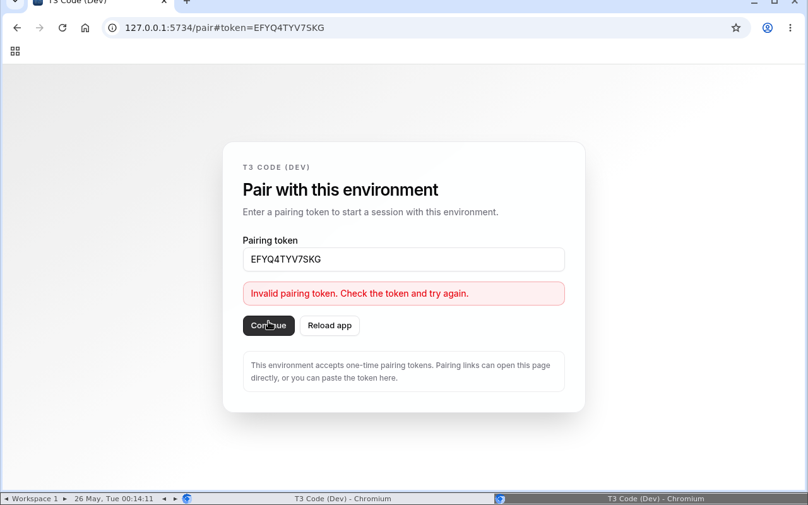
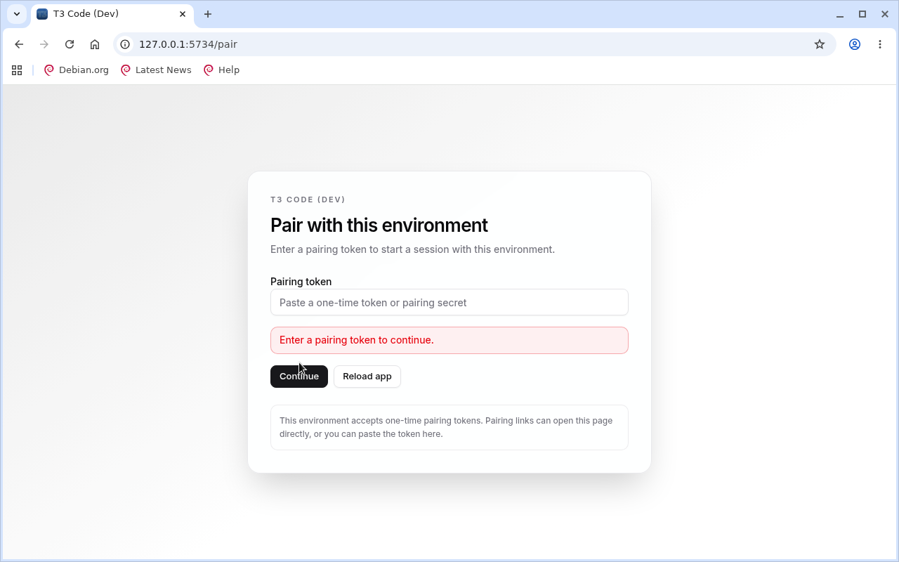
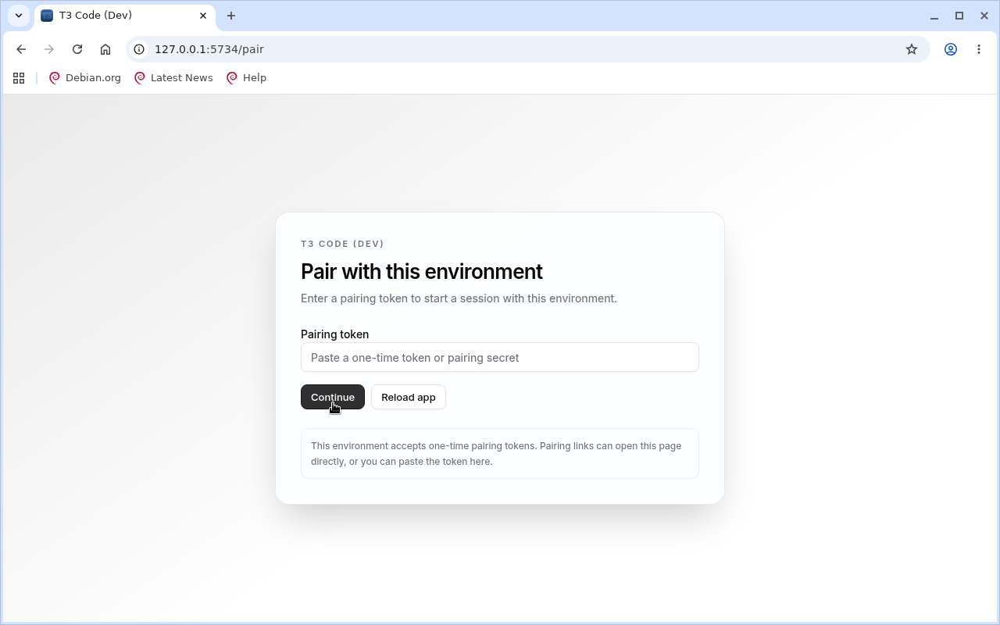
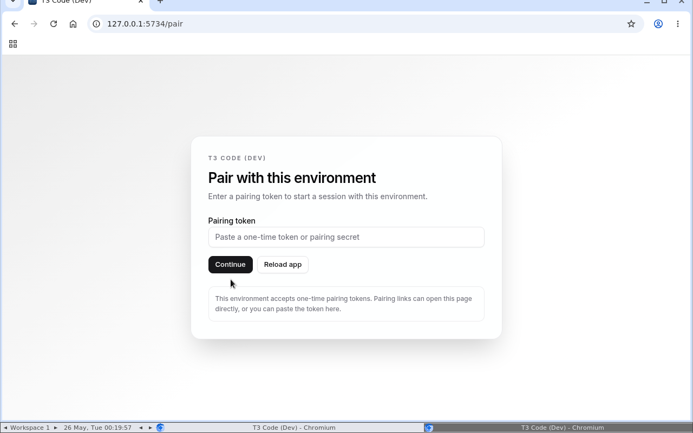

Generated 2026-05-26T00:21:22.508Z
t3code-diffkit-final
Project: /home/ubuntu/github/t3code
noVNC: http://127.0.0.1:6081/vnc.html
Artifacts:
/home/ubuntu/github/t3code/.proof-artifacts/sessions/t3code-diffkit-final
Summary
Status
running
8 min 23 s
Screenshots
11
final-11-root-after-cookie.png
Recordings
1
final-ui-flow.mp4 · 8 min 10 s
Failures
1
Last event: record-stop
Failure Context
-
exec 2026-05-26T00:14:03.887Z
{"type":"exec","at":"2026-05-26T00:14:03.887Z","command":"sh -s","stdin":true,"status":1,"signal":null,"failedAt":"2026-05-26T00:14:03.887Z"}
Screenshots







Recordings
final-ui-flow.mp4 · 5.0 MB
Timeline
-
start 2026-05-26T00:12:59.750Z
{"type":"start","at":"2026-05-26T00:12:59.750Z","container":"proof-artifacts-t3code-diffkit-final","image":"proof-artifacts/desktop:0.1.0","imageSource":"local","noVncPort":6081} -
novnc-ready 2026-05-26T00:13:00.400Z
{"type":"novnc-ready","at":"2026-05-26T00:13:00.400Z","url":"http://127.0.0.1:6081/vnc.html"} -
open 2026-05-26T00:13:07.527Z
{"type":"open","at":"2026-05-26T00:13:07.527Z","url":"http://127.0.0.1:5734/","fullscreen":true} -
record-start 2026-05-26T00:13:07.899Z
{"type":"record-start","at":"2026-05-26T00:13:07.899Z","label":"final-ui-flow","file":"/home/ubuntu/github/t3code/.proof-artifacts/sessions/t3code-diffkit-final/recordings/final-ui-flow.mp4"} -
screenshot 2026-05-26T00:13:15.315Z
{"type":"screenshot","at":"2026-05-26T00:13:15.315Z","label":"final-01-entry","file":"/home/ubuntu/github/t3code/.proof-artifacts/sessions/t3code-diffkit-final/screenshots/final-01-entry.png"} -
open 2026-05-26T00:13:45.392Z
{"type":"open","at":"2026-05-26T00:13:45.392Z","url":"http://127.0.0.1:5734/pair#token=[redacted]","fullscreen":true} -
screenshot 2026-05-26T00:13:51.198Z
{"type":"screenshot","at":"2026-05-26T00:13:51.198Z","label":"final-02-paired","file":"/home/ubuntu/github/t3code/.proof-artifacts/sessions/t3code-diffkit-final/screenshots/final-02-paired.png"} -
exec 2026-05-26T00:14:03.887Z
{"type":"exec","at":"2026-05-26T00:14:03.887Z","command":"sh -s","stdin":true,"status":1,"signal":null,"failedAt":"2026-05-26T00:14:03.887Z"} -
screenshot 2026-05-26T00:14:11.684Z
{"type":"screenshot","at":"2026-05-26T00:14:11.684Z","label":"final-03-after-token-attempt","file":"/home/ubuntu/github/t3code/.proof-artifacts/sessions/t3code-diffkit-final/screenshots/final-03-after-token-attempt.png"} -
exec 2026-05-26T00:14:30.317Z
{"type":"exec","at":"2026-05-26T00:14:30.317Z","command":"sh -s","stdin":true,"status":0} -
exec 2026-05-26T00:14:39.926Z
{"type":"exec","at":"2026-05-26T00:14:39.926Z","command":"sh -s","stdin":true,"status":0} -
screenshot 2026-05-26T00:14:46.358Z
{"type":"screenshot","at":"2026-05-26T00:14:46.358Z","label":"final-04-pair-manual","file":"/home/ubuntu/github/t3code/.proof-artifacts/sessions/t3code-diffkit-final/screenshots/final-04-pair-manual.png"} -
exec 2026-05-26T00:15:35.507Z
{"type":"exec","at":"2026-05-26T00:15:35.507Z","command":"sh -s","stdin":true,"status":0} -
screenshot 2026-05-26T00:15:41.994Z
{"type":"screenshot","at":"2026-05-26T00:15:41.994Z","label":"final-05-paired-app","file":"/home/ubuntu/github/t3code/.proof-artifacts/sessions/t3code-diffkit-final/screenshots/final-05-paired-app.png"} -
exec 2026-05-26T00:16:04.923Z
{"type":"exec","at":"2026-05-26T00:16:04.923Z","command":"sh -s","stdin":true,"status":0} -
screenshot 2026-05-26T00:16:08.723Z
{"type":"screenshot","at":"2026-05-26T00:16:08.723Z","label":"final-06-tab-pair","file":"/home/ubuntu/github/t3code/.proof-artifacts/sessions/t3code-diffkit-final/screenshots/final-06-tab-pair.png"} -
exec 2026-05-26T00:16:35.064Z
{"type":"exec","at":"2026-05-26T00:16:35.064Z","command":"sh -s","stdin":true,"status":0} -
exec 2026-05-26T00:16:39.384Z
{"type":"exec","at":"2026-05-26T00:16:39.384Z","command":"sh -s","stdin":true,"status":0} -
exec 2026-05-26T00:17:01.986Z
{"type":"exec","at":"2026-05-26T00:17:01.986Z","command":"sh -s","stdin":true,"status":0} -
screenshot 2026-05-26T00:17:06.423Z
{"type":"screenshot","at":"2026-05-26T00:17:06.423Z","label":"final-07-js-pair","file":"/home/ubuntu/github/t3code/.proof-artifacts/sessions/t3code-diffkit-final/screenshots/final-07-js-pair.png"} -
open 2026-05-26T00:18:02.909Z
{"type":"open","at":"2026-05-26T00:18:02.909Z","url":"http://127.0.0.1:5799/","fullscreen":true} -
screenshot 2026-05-26T00:18:07.024Z
{"type":"screenshot","at":"2026-05-26T00:18:07.024Z","label":"final-08-authenticated","file":"/home/ubuntu/github/t3code/.proof-artifacts/sessions/t3code-diffkit-final/screenshots/final-08-authenticated.png"} -
exec 2026-05-26T00:18:22.343Z
{"type":"exec","at":"2026-05-26T00:18:22.343Z","command":"sh -s","stdin":true,"status":0} -
screenshot 2026-05-26T00:18:22.923Z
{"type":"screenshot","at":"2026-05-26T00:18:22.923Z","label":"final-09-cookie-redirect","file":"/home/ubuntu/github/t3code/.proof-artifacts/sessions/t3code-diffkit-final/screenshots/final-09-cookie-redirect.png"} -
exec 2026-05-26T00:18:58.803Z
{"type":"exec","at":"2026-05-26T00:18:58.803Z","command":"sh -s","stdin":true,"status":0} -
screenshot 2026-05-26T00:18:59.366Z
{"type":"screenshot","at":"2026-05-26T00:18:59.366Z","label":"final-10-auth-cookie","file":"/home/ubuntu/github/t3code/.proof-artifacts/sessions/t3code-diffkit-final/screenshots/final-10-auth-cookie.png"} -
exec 2026-05-26T00:19:30.407Z
{"type":"exec","at":"2026-05-26T00:19:30.407Z","command":"sh -s","stdin":true,"status":0} -
exec 2026-05-26T00:19:57.547Z
{"type":"exec","at":"2026-05-26T00:19:57.547Z","command":"sh -s","stdin":true,"status":0} -
screenshot 2026-05-26T00:19:58.090Z
{"type":"screenshot","at":"2026-05-26T00:19:58.090Z","label":"final-11-root-after-cookie","file":"/home/ubuntu/github/t3code/.proof-artifacts/sessions/t3code-diffkit-final/screenshots/final-11-root-after-cookie.png"} -
record-stop 2026-05-26T00:21:20.852Z
{"type":"record-stop","at":"2026-05-26T00:21:20.852Z","label":"final-ui-flow","file":"/home/ubuntu/github/t3code/.proof-artifacts/sessions/t3code-diffkit-final/recordings/final-ui-flow.mp4"}
Logs
- recordings/final-ui-flow.log · 108.4 KB
Manifest
{
"schemaVersion": 1,
"events": [
{
"type": "start",
"at": "2026-05-26T00:12:59.750Z",
"container": "proof-artifacts-t3code-diffkit-final",
"image": "proof-artifacts/desktop:0.1.0",
"imageSource": "local",
"noVncPort": 6081
},
{
"type": "novnc-ready",
"at": "2026-05-26T00:13:00.400Z",
"url": "http://127.0.0.1:6081/vnc.html"
},
{
"type": "open",
"at": "2026-05-26T00:13:07.527Z",
"url": "http://127.0.0.1:5734/",
"fullscreen": true
},
{
"type": "record-start",
"at": "2026-05-26T00:13:07.899Z",
"label": "final-ui-flow",
"file": "/home/ubuntu/github/t3code/.proof-artifacts/sessions/t3code-diffkit-final/recordings/final-ui-flow.mp4"
},
{
"type": "screenshot",
"at": "2026-05-26T00:13:15.315Z",
"label": "final-01-entry",
"file": "/home/ubuntu/github/t3code/.proof-artifacts/sessions/t3code-diffkit-final/screenshots/final-01-entry.png"
},
{
"type": "open",
"at": "2026-05-26T00:13:45.392Z",
"url": "http://127.0.0.1:5734/pair#token=[redacted]",
"fullscreen": true
},
{
"type": "screenshot",
"at": "2026-05-26T00:13:51.198Z",
"label": "final-02-paired",
"file": "/home/ubuntu/github/t3code/.proof-artifacts/sessions/t3code-diffkit-final/screenshots/final-02-paired.png"
},
{
"type": "exec",
"at": "2026-05-26T00:14:03.887Z",
"command": "sh -s",
"stdin": true,
"status": 1,
"signal": null,
"failedAt": "2026-05-26T00:14:03.887Z"
},
{
"type": "screenshot",
"at": "2026-05-26T00:14:11.684Z",
"label": "final-03-after-token-attempt",
"file": "/home/ubuntu/github/t3code/.proof-artifacts/sessions/t3code-diffkit-final/screenshots/final-03-after-token-attempt.png"
},
{
"type": "exec",
"at": "2026-05-26T00:14:30.317Z",
"command": "sh -s",
"stdin": true,
"status": 0
},
{
"type": "exec",
"at": "2026-05-26T00:14:39.926Z",
"command": "sh -s",
"stdin": true,
"status": 0
},
{
"type": "screenshot",
"at": "2026-05-26T00:14:46.358Z",
"label": "final-04-pair-manual",
"file": "/home/ubuntu/github/t3code/.proof-artifacts/sessions/t3code-diffkit-final/screenshots/final-04-pair-manual.png"
},
{
"type": "exec",
"at": "2026-05-26T00:15:35.507Z",
"command": "sh -s",
"stdin": true,
"status": 0
},
{
"type": "screenshot",
"at": "2026-05-26T00:15:41.994Z",
"label": "final-05-paired-app",
"file": "/home/ubuntu/github/t3code/.proof-artifacts/sessions/t3code-diffkit-final/screenshots/final-05-paired-app.png"
},
{
"type": "exec",
"at": "2026-05-26T00:16:04.923Z",
"command": "sh -s",
"stdin": true,
"status": 0
},
{
"type": "screenshot",
"at": "2026-05-26T00:16:08.723Z",
"label": "final-06-tab-pair",
"file": "/home/ubuntu/github/t3code/.proof-artifacts/sessions/t3code-diffkit-final/screenshots/final-06-tab-pair.png"
},
{
"type": "exec",
"at": "2026-05-26T00:16:35.064Z",
"command": "sh -s",
"stdin": true,
"status": 0
},
{
"type": "exec",
"at": "2026-05-26T00:16:39.384Z",
"command": "sh -s",
"stdin": true,
"status": 0
},
{
"type": "exec",
"at": "2026-05-26T00:17:01.986Z",
"command": "sh -s",
"stdin": true,
"status": 0
},
{
"type": "screenshot",
"at": "2026-05-26T00:17:06.423Z",
"label": "final-07-js-pair",
"file": "/home/ubuntu/github/t3code/.proof-artifacts/sessions/t3code-diffkit-final/screenshots/final-07-js-pair.png"
},
{
"type": "open",
"at": "2026-05-26T00:18:02.909Z",
"url": "http://127.0.0.1:5799/",
"fullscreen": true
},
{
"type": "screenshot",
"at": "2026-05-26T00:18:07.024Z",
"label": "final-08-authenticated",
"file": "/home/ubuntu/github/t3code/.proof-artifacts/sessions/t3code-diffkit-final/screenshots/final-08-authenticated.png"
},
{
"type": "exec",
"at": "2026-05-26T00:18:22.343Z",
"command": "sh -s",
"stdin": true,
"status": 0
},
{
"type": "screenshot",
"at": "2026-05-26T00:18:22.923Z",
"label": "final-09-cookie-redirect",
"file": "/home/ubuntu/github/t3code/.proof-artifacts/sessions/t3code-diffkit-final/screenshots/final-09-cookie-redirect.png"
},
{
"type": "exec",
"at": "2026-05-26T00:18:58.803Z",
"command": "sh -s",
"stdin": true,
"status": 0
},
{
"type": "screenshot",
"at": "2026-05-26T00:18:59.366Z",
"label": "final-10-auth-cookie",
"file": "/home/ubuntu/github/t3code/.proof-artifacts/sessions/t3code-diffkit-final/screenshots/final-10-auth-cookie.png"
},
{
"type": "exec",
"at": "2026-05-26T00:19:30.407Z",
"command": "sh -s",
"stdin": true,
"status": 0
},
{
"type": "exec",
"at": "2026-05-26T00:19:57.547Z",
"command": "sh -s",
"stdin": true,
"status": 0
},
{
"type": "screenshot",
"at": "2026-05-26T00:19:58.090Z",
"label": "final-11-root-after-cookie",
"file": "/home/ubuntu/github/t3code/.proof-artifacts/sessions/t3code-diffkit-final/screenshots/final-11-root-after-cookie.png"
},
{
"type": "record-stop",
"at": "2026-05-26T00:21:20.852Z",
"label": "final-ui-flow",
"file": "/home/ubuntu/github/t3code/.proof-artifacts/sessions/t3code-diffkit-final/recordings/final-ui-flow.mp4"
}
],
"screenshots": [
{
"label": "final-01-entry",
"file": "/home/ubuntu/github/t3code/.proof-artifacts/sessions/t3code-diffkit-final/screenshots/final-01-entry.png",
"capturedAt": "2026-05-26T00:13:15.315Z"
},
{
"label": "final-02-paired",
"file": "/home/ubuntu/github/t3code/.proof-artifacts/sessions/t3code-diffkit-final/screenshots/final-02-paired.png",
"capturedAt": "2026-05-26T00:13:51.198Z"
},
{
"label": "final-03-after-token-attempt",
"file": "/home/ubuntu/github/t3code/.proof-artifacts/sessions/t3code-diffkit-final/screenshots/final-03-after-token-attempt.png",
"capturedAt": "2026-05-26T00:14:11.683Z"
},
{
"label": "final-04-pair-manual",
"file": "/home/ubuntu/github/t3code/.proof-artifacts/sessions/t3code-diffkit-final/screenshots/final-04-pair-manual.png",
"capturedAt": "2026-05-26T00:14:46.358Z"
},
{
"label": "final-05-paired-app",
"file": "/home/ubuntu/github/t3code/.proof-artifacts/sessions/t3code-diffkit-final/screenshots/final-05-paired-app.png",
"capturedAt": "2026-05-26T00:15:41.994Z"
},
{
"label": "final-06-tab-pair",
"file": "/home/ubuntu/github/t3code/.proof-artifacts/sessions/t3code-diffkit-final/screenshots/final-06-tab-pair.png",
"capturedAt": "2026-05-26T00:16:08.723Z"
},
{
"label": "final-07-js-pair",
"file": "/home/ubuntu/github/t3code/.proof-artifacts/sessions/t3code-diffkit-final/screenshots/final-07-js-pair.png",
"capturedAt": "2026-05-26T00:17:06.423Z"
},
{
"label": "final-08-authenticated",
"file": "/home/ubuntu/github/t3code/.proof-artifacts/sessions/t3code-diffkit-final/screenshots/final-08-authenticated.png",
"capturedAt": "2026-05-26T00:18:07.024Z"
},
{
"label": "final-09-cookie-redirect",
"file": "/home/ubuntu/github/t3code/.proof-artifacts/sessions/t3code-diffkit-final/screenshots/final-09-cookie-redirect.png",
"capturedAt": "2026-05-26T00:18:22.923Z"
},
{
"label": "final-10-auth-cookie",
"file": "/home/ubuntu/github/t3code/.proof-artifacts/sessions/t3code-diffkit-final/screenshots/final-10-auth-cookie.png",
"capturedAt": "2026-05-26T00:18:59.366Z"
},
{
"label": "final-11-root-after-cookie",
"file": "/home/ubuntu/github/t3code/.proof-artifacts/sessions/t3code-diffkit-final/screenshots/final-11-root-after-cookie.png",
"capturedAt": "2026-05-26T00:19:58.090Z"
}
],
"recordings": [
{
"label": "final-ui-flow",
"file": "/home/ubuntu/github/t3code/.proof-artifacts/sessions/t3code-diffkit-final/recordings/final-ui-flow.mp4",
"startedAt": "2026-05-26T00:13:07.899Z",
"stoppedAt": "2026-05-26T00:21:20.852Z",
"durationMs": 492953
}
],
"name": "t3code-diffkit-final",
"width": "1280",
"height": "800",
"project": "/home/ubuntu/github/t3code",
"artifacts": "/home/ubuntu/github/t3code/.proof-artifacts/sessions/t3code-diffkit-final",
"noVncUrl": "http://127.0.0.1:6081/vnc.html",
"noVncPort": 6081,
"noVncListen": "127.0.0.1",
"network": "host",
"targetUrl": "http://127.0.0.1:5734/",
"networkInferredFromUrl": true,
"browserFullscreen": true,
"vncPort": 5901,
"container": "proof-artifacts-t3code-diffkit-final",
"containerUser": "1001:1001",
"image": "proof-artifacts/desktop:0.1.0",
"imageId": "sha256:6785bf31c1950a4f9839eec9f077eb8de1422e17dfb9cfd723de7a1f567fbad5",
"requestedImage": "proof-artifacts/desktop:0.1.0",
"imageSource": "local",
"startedAt": "2026-05-26T00:12:59.746Z",
"stoppedAt": null
}